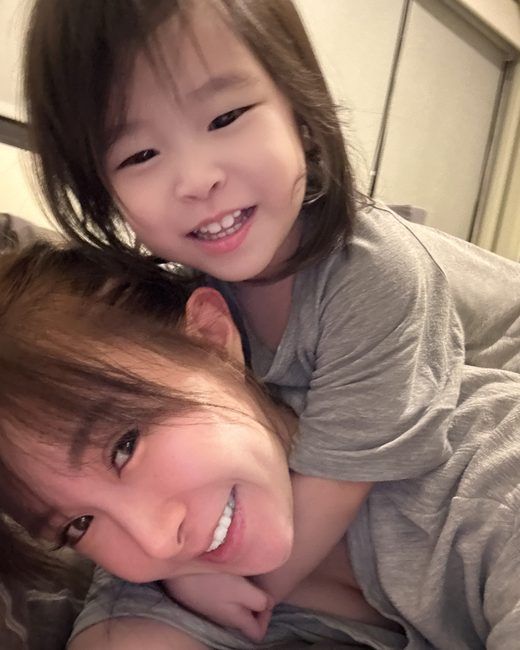

女兒出生那年，我沒有回公司上班
一開始我覺得這樣很好
後來發現不是
家裡的經濟是我老公在撐
我能做的，就是把家打理好、把小孩照顧好
三年來自認做得不差
家裡每件事都在軌道上，小孩健健康康長大
只是把最後一件事做完、坐下來的時候
偶爾會有一個念頭閃過去
我以前也有自己想做的事
也有過那種「我正在往前走」的感覺
可是那三年，我想不起來上一次是什麼時候
我不是沒想過回去工作
但你把時間算一遍就知道不可能
接送小孩、整理家裡、弄飯、洗澡、哄睡
要是再塞一份正職工作進去，整個生活節奏會直接崩掉
而且她晚上還會醒，我連一覺都睡不完整
所以我卡住了
想做點什麼，但沒有一件事塞得進我的生活
一年前我開始學交易
不是因為我懂
我零基礎，完全零
是因為這是我唯一找得到、又塞得進生活縫隙裡的事
不用配合上課時間，不用出門，不用找人顧小孩
就是等她睡著之後那十幾分鐘
看課、做筆記，把不懂的問題丟到社群裡
是我又開始有那種「今天我學到東西了」的感覺
那感覺我已經三年沒有過了
再往後，我看得懂圖了，做對了一些判斷，也開始賺到錢
我也賠過
第一次賠的時候我沒有慌，因為課裡就講過會有這一天
我把那次記下來，隔天丟到社群問教練我哪裡看錯
一年了
我沒有辭掉媽媽這個身份，沒有把小孩丟給任何人
生活的節奏跟前面那三年一模一樣
差別只在於每天晚上多出來的那十幾分鐘
我拿去換了一件會累積的事

你可能有一份穩定的工作，做得也不差
只是你心裡清楚，再過五年、十年，日子大概就是現在這個樣子
你可能還很年輕，很拚
但不確定自己現在做的事會把你帶到哪裡去
你可能只是已經很久，沒有為自己學過一件新東西了
我們卡住的地方不一樣，但那個感覺是同一個
我只想跟你說一件事
我們學院的課免費，不收學費，你不用先花錢
一天只要 10 到 15 分鐘，線上看影片，自己安排時間，不用配合誰
社群裡有教練，卡住隨時可以問
不是丟一堆影片叫你自己想辦法
為什麼免費
因為學院的收入來自交易所的返佣
所以我們希望你真的學得會，不是希望你趕快進場
學不會的人不會留下來